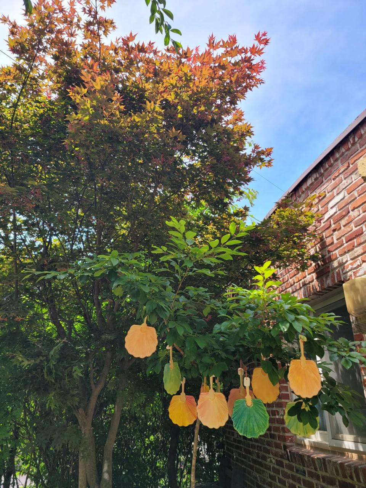
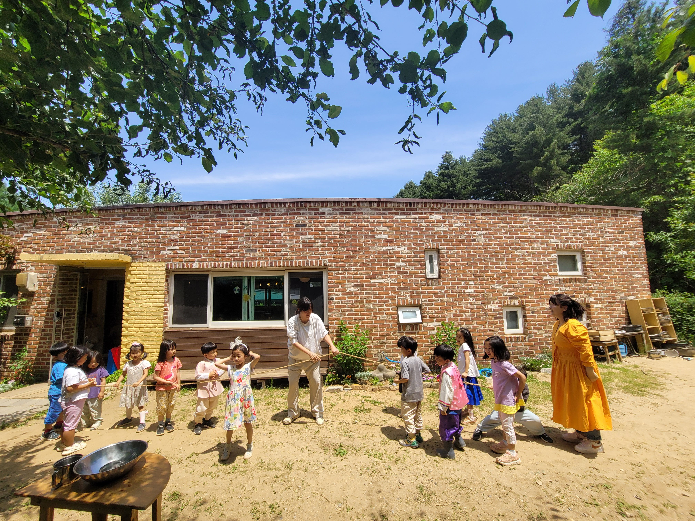

푸른숲 발도르프 학교 어린이집
자연 속에서 마음껏 놀고, 따뜻한 배려 속에서 자라는 곳
발도르프 유아교육은 아이들의 자연스러운 성장과 발달을 돕기 위해 놀이, 예술, 리듬, 모방, 질서를 중심으로 구성됩니다.
01.
리듬과 반복
아이들에게 안정감과 예측 가능성을 제공합니다. 일상의 리듬과 계절적 변화를 경험하며 아이들은 시간의 흐름을 이해하고, 세계와 조화를 이루는 법을 배웁니다.
02.
자연과의 깊은 연결
아이들의 감각을 발달시키고 신체적, 정서적 성장을 돕습니다. 자연 속에서의 활동과 감각적 경험을 통해 아이들은 세상을 탐구하며 건강하고 균형 잡힌 성장을 이룹니다.
03.
놀이를 통한 학습
아이들의 상상력과 창의성을 키웁니다. 자유로운 놀이와 간단한 자연물을 활용한 활동을 통해 아이들은 스스로 탐구하고 문제를 해결하는 능력을 기릅니다.
푸른숲 발도르프 어린이집에서는 감각 발달과 정서적 안정감을 우선으로 하며, 아이들이 자연스럽게 학습할 수 있도록 환경을 조성합니다.
유아 성장 단계에 맞게 아이들은 직접적인 가르침보다 성인의 행동을 자연스럽게 모방하며 배우게 됩니다.
발도르프 유아교육의 목표
자율적이고 창의적인 사고를 가진 아이로 성장하도록 도우며 놀이와 경험을 통해 자연스럽게 학습하도록 합니다.
아이들의 신체, 감성, 인지의 균형 잡힌 발달을 지원하고 아이들이 자기만의 리듬과 개성을 존중받으며 성장할 수 있도록 합니다.


전인교육을 위한 발도르프
“발도르프교육학은 전혀 교육학적인 시스템이 아닌, 인간 안에 들어있는 것을 깨어나게 하는 하나의 예술이다. 근본적으로 보면 발도르프교육학은 끌어당기거나 어디로 유도하는 교육이 아니고 깨우는 교육이다. 오늘날 바로 이러한 깨움이 요구되고 있다. 우선 교사가 먼저 깨어나야 한다, 그리고 다음에 그 교사가 아이들과 어린 인간들을 깨워야만 한다.”루돌프 슈타이너 (Dr. Rudolf Steiner)
블로그
푸른숲 발도르프 어린이집 부모님들이 함께 만들어가는 블로그입니다. 아이들의 생활과 성장, 발도르프 교육에 대한 이야기들이 담겨 있습니다.
인스타그램
어린이집 소식과 생활을 전합니다. 블로그에 올라오는 글도 소개하며 보다 다양한 채널을 통해 소통하고자 합니다.
푸른숲발도르프 학교
경기광주 퇴촌에 위치한 푸른숲발도르프 학교 홈페이지입니다.
유튜브
어린이집 형님들이 다니는 푸른숲 발도르프 학교의 활동 모습들을 영상을 통해 소개합니다.